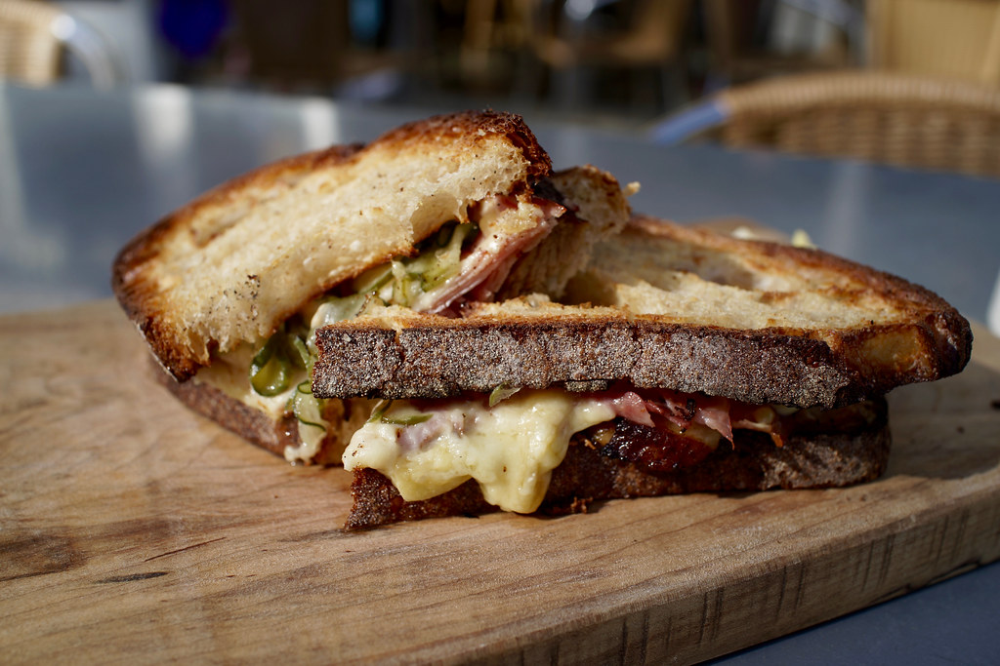

Microwave Rye Bread

A tasty and easy to make rye bread "grilled cheese" sandwich using a microwave
Have you ever wanted to eat a rye bread grilled cheese sandwich, but didn't want to grill it? Now with this recipe, you can do just that! Using a microwave you too can make all of your culinarist friends cry as you eat the breakfast of the gods!
Ingredients:
- 2 slices of rye bread
- Margarine or butter
- Ham or other sausage (pre-sliced is prefered)
- Cheese
- A microwave
- A plate
Steps to follow:
- Take out the plate
- Place the 2 slices of rye bread on the plate
- Butter up the 2 slices of bread with either butter or margarine
- Place the sliced sausages on the breads
- Put cheese on the bread till its top is covered by it
- Take the plate and the bread and put it into the microwave
- Put the microwave on and wait till the cheese is visibly melten
- Take the ready food out of the microwave
Congratulations! You've now ready to eat your food!